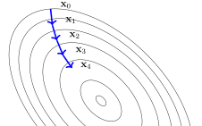

Numerical Optimization
Contents
Numerical Optimization#
We have seen some strategies to find a solution to optimization objectives by means of solving a system of equations. These strategies work usually fine for simple objectives, but if I have a lot of valleys and hills in my optimization objective, then solving this system of equations analytically will not always be possible. What can we do then?
If the minimizers can not be computed directly/analytically, then numerical optimization can come to the rescue. The idea is that I start somewhere in my hilly landscape and then try to walk to a valley with a specified strategy. For those types of methods it’s good to know how good the strategy is. Important is for example to ask whether I will ever arrive at my minimum if I just walk long enough, or if I have to wonder endlessly around in a bad case. And what happens if I just walk a few steps, would I then have improved upon my starting position or might I not have descended at all? We state here two very popular numerical optimization methods: coordinate descent and gradient descent. Both are presented for the optimization of an unconstrained objective, but they do have extensions to incorporate constraints as well. This is beyond of the scope of this course, though.
The general scheme of numerical optimization methods is typically
Algorithm 1 (Numerical Optimization)
Input: the function \(f\) to minimize, the maximum number of steps \(t_{max}\)
\(\vvec{x}_0\gets\)
Initialize(\(\vvec{x}_0\))for \(t\in\{1,\ldots,t_{max}-1\}\)
\(\vvec{x}_{t+1}\gets \)
Update(\(\vvec{x}_t,f\))
return \(\vvec{x}_{t_{max}}\)
Coordinate descent#
The coordinate descent method is promising if we can not determine the minimum to the function analytically, but the minimum in a coordinate direction. The update is performed by cycling over all coordinates and walking to the minimum subject to that coordinate in each step.
Algorithm 2 (Coordinate Descent)
Input: the function \(f\) to minimize
\(\vvec{x}_0\gets\)
Initialize(\(\vvec{x}_0\))for \(t\in\{1,\ldots,t_{max}-1\}\)
for \(i\in\{1,\ldots d\}\) do
\(\displaystyle {x_i}^{(t+1)}\leftarrow \argmin_{x_i} f({x_1}^{(t+1)},\ldots ,{x_{i-1}}^{(t+1)}, x_i,{x_{i+1}}^{(t)},\ldots ,{x_d}^{(t)})\)
return \(\vvec{x}_{t_{max}}\)
The figure below shows the level set of a function, where every ring indicates the points in the domain of the function that have a specified function value \(\{\vvec{x}\mid f(\vvec{x})=c\}\). The plotted function has a minimum at the center of the ellipses. We start at \(\vvec{x}_0\) and then move to the minimum in direction of the vertical coordinate. That is, we move to the smallest ellipse (smallest diameter) we can touch in direction of the vertical coordinate. Then we move to the minimum in direction of the horizontal coordinate and we are already at our minimum where the method stops.

Coordinate descent minimizes the function value in every step:
Example 10 (Coordinate descent of the Rosenbrock function)
{kind=link}
Fig. 2 Coordinate descent updates#
Let’s try to apply coordinate descent to find the minimum of the Rosenbrock function. From Example 9 we know the partial derivatives of the function
We compute the minima of the function in direction of the coordinates by means of FONC. The derivatives subject to each coordinate are exactly given by the partial derivatives, hence we set them equal to zero:
We have here only one minimizer candidate for each coordinate, and since we know from Example 9 that the function has only one minimizer (and no other maximizer or such), we know that the coordinate-wise minimizer candidates actually minimize the function in each coordinate. From this, we derive our update rules:
Fig. 2 shows the result of these update rules when starting at \((-2,2)\). We see that the minimum is quickly reached after one cycle of updating each coordinate.
Gradient Descent#
If we can’t solve the system of equations given by FONC, also no coordinate-wise, but the function is differentiable, then we can apply gradient descent. Gradient descent is a strategy according to which you take a step in the direction which goes down the most steeply from where you stand.
Algorithm 3 (Gradient Descent)
Input: the function \(f\) to minimize, step-size \(\eta\)
\(\vvec{x}_0\gets\)
Initialize(\(\vvec{x}_0\))for \(t\in\{1,\ldots,t_{max}-1\}\)
\(\vvec{x}_{t+1}\leftarrow \vvec{x}_t - \eta \nabla f(\vvec{x}_t)\)
return \(\vvec{x}_{t_{max}}\)
The parameter \(\eta\) doesn’t have to be a constant, it might also be a function that returns the step size depending on the amount of steps that have already performed. Setting the step size well is often a difficult task. The figure below shows how gradient descent makes the updates based on the local information.

The negative gradient points into the direction of steepest descent. Hence, for a small enough step size we will go down each step:
Example 11 (Gradient Descent on the Rosenbrock Function)
We illustrate the effect of the step-size by means of the Rosenbrock function. Fig. 3 shows the trajectory when using a small step-size, Fig. 4 shows a moderate step size and Fig. 5 shows a larger step-size. We observe that all three step-sizes result in a sequence that converges to the minimim \((1,1)\). However, in particular the very small step-size results in a trajectory that requires many many steps. The fastest convergence has the larger step-size, but even this one needs approximately 800 iterations. In comparison to coordinate descent, that just required to update each coordinate once, gradient descent is much more inefficient. We also observe that the trajectory for the larger step-size is already zig-zagging, which often indicates that the step-size is actually too large, since it overshoots in each step. Hence, this function is not very efficiently optimizable with gradient descent. But feel free to try it yourself.

Fig. 3 Gradient Descent with \(\eta=0.0005\) on the Rosenbrock Function#

Fig. 4 Gradient Descent with \(\eta=0.00125\) on the Rosenbrock Function#
{kind=link}
Fig. 5 Gradient Descent with \(\eta=0.0016\) on the Rosenbrock Function#